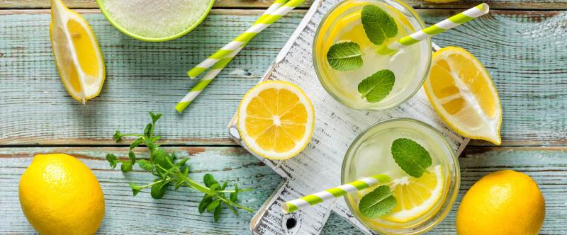

Лимонад

- TODO
Тщательно промыть 3–4 больших лимона щеткой, нарезать произвольно и измельчить в блендере.
Приготовить сироп: налить в небольшую кастрюлю 2 стакана минеральной воды без газа, всыпать 1,5 стакана коричневого сахара, поставить на маленький огонь и варить сироп, постоянно помешивая, пока весь сахар не растворится, примерно 5 мин.
Залить измельченные лимоны 2 л. минеральной воды без газа. Добавить сироп, затем процедить через мелкое сито или марлю. Добавить свежевыжатый сок 3 больших аппельсинов. Проверить, хватает ли сахара, если нет, добавить еще сиропа или мед. Налить готовый лимонад в кувшин, добавить листья небольшого пучка мяты и уберать в холодильник до использования.
 Назад к списку рецептов
Назад к списку рецептов